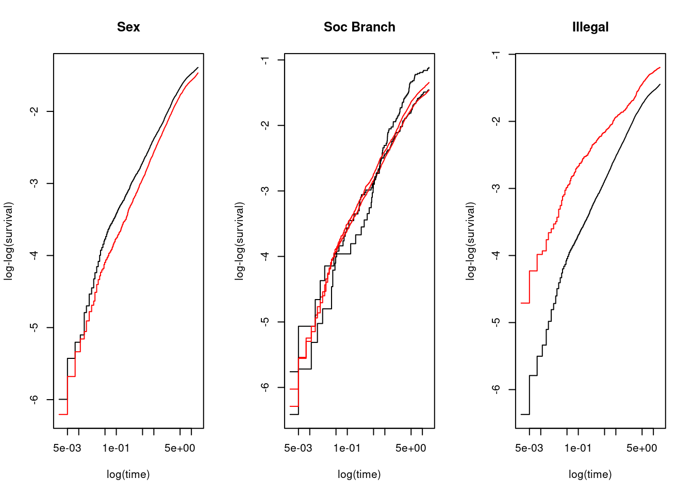

Chapter 6 Cox Proportional Hazard Modeling
6.1 Setup working datasets
library(tidyverse)
library(knitr)
library(kableExtra)
library(eha)
library(survival)
library(data.table)
library(flextable)
library(survminer)
library(ggfortify)
library(ggplot2)
library(data.table)
library(coxme)oldmort01 <- oldmort6.2 Cox Proportional Hazard Models: Example
6.2.1 Cox model specification
\[h_{(t,X)} = h_0 (t) \exp(\sum_{i=1}^p \beta_i X_i), \;\; \text{where}\; X = (X_1, X_2, \cdots, X_p)\]
The following result was obtained by using coxreg from the eha package.
oldmort_cox <- coxreg(Surv(enter, exit, event) ~ sex + region + imr.birth,
data = oldmort01)
print(summary(oldmort_cox), digits = 4)## Covariate Mean Coef Rel.Risk S.E. LR p
## sex 0.0001
## male 0.406 0 1 (reference)
## female 0.594 -0.185 0.831 0.046
## region 0.0013
## town 0.111 0 1 (reference)
## industry 0.326 0.225 1.252 0.087
## rural 0.563 0.069 1.071 0.087
## imr.birth 15.162 0.005 1.005 0.007 0.5009
##
## Events 1971
## Total time at risk 37824
## Max. log. likelihood -13563
## LR test statistic 31.41
## Degrees of freedom 4
## Overall p-value 2.52611e-06The same results can be obtained by using coxph from the survival package.
oldmort_cox <- coxph(Surv(enter, exit, event) ~ sex + region + imr.birth,
data = oldmort01)
print(summary(oldmort_cox), digits = 4)## Call:
## coxph(formula = Surv(enter, exit, event) ~ sex + region + imr.birth,
## data = oldmort01)
##
## n= 6495, number of events= 1971
##
## coef exp(coef) se(coef) z Pr(>|z|)
## sexfemale -0.185247 0.830899 0.045913 -4.035 5.47e-05 ***
## regionindustry 0.224903 1.252201 0.087093 2.582 0.00981 **
## regionrural 0.069031 1.071470 0.086627 0.797 0.42552
## imr.birth 0.004548 1.004558 0.006742 0.675 0.49994
## ---
## Signif. codes: 0 '***' 0.001 '**' 0.01 '*' 0.05 '.' 0.1 ' ' 1
##
## exp(coef) exp(-coef) lower .95 upper .95
## sexfemale 0.8309 1.2035 0.7594 0.9091
## regionindustry 1.2522 0.7986 1.0557 1.4853
## regionrural 1.0715 0.9333 0.9042 1.2697
## imr.birth 1.0046 0.9955 0.9914 1.0179
##
## Concordance= 0.545 (se = 0.008 )
## Likelihood ratio test= 31.41 on 4 df, p=3e-06
## Wald test = 31.7 on 4 df, p=2e-06
## Score (logrank) test = 31.8 on 4 df, p=2e-06We would prefer to have \(HR > 1\) than \(HR < 1\) to ease interpretation.
oldmort01$male <- relevel(oldmort01$sex, ref = "female")oldmort_cox <- coxph(Surv(enter, exit, event) ~ male + region + imr.birth,
data = oldmort01)
print(summary(oldmort_cox), digits = 4)## Call:
## coxph(formula = Surv(enter, exit, event) ~ male + region + imr.birth,
## data = oldmort01)
##
## n= 6495, number of events= 1971
##
## coef exp(coef) se(coef) z Pr(>|z|)
## malemale 0.185247 1.203516 0.045913 4.035 5.47e-05 ***
## regionindustry 0.224903 1.252201 0.087093 2.582 0.00981 **
## regionrural 0.069031 1.071470 0.086627 0.797 0.42552
## imr.birth 0.004548 1.004558 0.006742 0.675 0.49994
## ---
## Signif. codes: 0 '***' 0.001 '**' 0.01 '*' 0.05 '.' 0.1 ' ' 1
##
## exp(coef) exp(-coef) lower .95 upper .95
## malemale 1.204 0.8309 1.0999 1.317
## regionindustry 1.252 0.7986 1.0557 1.485
## regionrural 1.071 0.9333 0.9042 1.270
## imr.birth 1.005 0.9955 0.9914 1.018
##
## Concordance= 0.545 (se = 0.008 )
## Likelihood ratio test= 31.41 on 4 df, p=3e-06
## Wald test = 31.7 on 4 df, p=2e-06
## Score (logrank) test = 31.8 on 4 df, p=2e-06The following code will extract coefficients and model fit statistics.
cox_coef <- summary(oldmort_cox)$coefficients
cox_fit <- rbind(
"Wald" = oldmort_cox$wald.test,
"Score(log_rank)" = oldmort_cox$score
)knitr::kable(cox_coef, digits=2)| coef | exp(coef) | se(coef) | z | Pr(>|z|) | |
|---|---|---|---|---|---|
| malemale | 0.19 | 1.20 | 0.05 | 4.03 | 0.00 |
| regionindustry | 0.22 | 1.25 | 0.09 | 2.58 | 0.01 |
| regionrural | 0.07 | 1.07 | 0.09 | 0.80 | 0.43 |
| imr.birth | 0.00 | 1.00 | 0.01 | 0.67 | 0.50 |
knitr::kable(cox_fit, digits=2)| Wald | 31.7 |
| Score(log_rank) | 31.8 |
6.2.2 Model 1: No covariates
oldmort_cox01 <- coxreg(Surv(enter, exit, event) ~ sex ,
data = oldmort01)
cox_coef01 <- as.data.frame(summary(oldmort_cox01)$coefficients)
cox_fit01 <- rbind(
"Wald" = oldmort_cox01$wald.test,
"Score(log_rank)" = oldmort_cox01$score
)6.2.3 Model 2: Categorical covariate: region
oldmort_cox02 <- coxreg(Surv(enter, exit, event) ~ sex + region ,
data = oldmort01)
cox_coef02 <- as.data.frame(summary(oldmort_cox02)$coefficients)
cox_fit02 <- rbind(
"Wald" = oldmort_cox02$wald.test,
"Score(log_rank)" = oldmort_cox02$score
)6.2.4 Model 3: Continuous covariate: imr.birth
oldmort_cox03 <- coxreg(Surv(enter, exit, event) ~ sex + region + imr.birth,
data = oldmort01)
cox_coef03 <- as.data.frame(summary(oldmort_cox03)$coefficients)
cox_fit03 <- rbind(
"Wald" = oldmort_cox03$wald.test,
"Score(log_rank)" = oldmort_cox03$score
)cox_coef <- cbind(setDT(cox_coef01), setDT(cox_coef02), setDT(cox_coef03))## Warning in as.data.table.list(x, keep.rownames = keep.rownames, check.names =
## check.names, : Item 2 has 3 rows but longest item has 4; recycled with
## remainder.cox_fit <- cbind(cox_fit01, cox_fit02, cox_fit03)
knitr::kable(cox_coef, digits=2)| coef | exp(coef) | se(coef) | z | Wald p | coef | exp(coef) | se(coef) | z | Wald p | coef | exp(coef) | se(coef) | z | Wald p |
|---|---|---|---|---|---|---|---|---|---|---|---|---|---|---|
| -0.19 | 0.82 | 0.05 | -4.23 | 0 | -0.19 | 0.83 | 0.05 | -4.07 | 0.00 | -0.19 | 0.83 | 0.05 | -4.03 | 0.00 |
| -0.19 | 0.82 | 0.05 | -4.23 | 0 | 0.21 | 1.24 | 0.08 | 2.50 | 0.01 | 0.22 | 1.25 | 0.09 | 2.58 | 0.01 |
| -0.19 | 0.82 | 0.05 | -4.23 | 0 | 0.05 | 1.05 | 0.08 | 0.62 | 0.53 | 0.07 | 1.07 | 0.09 | 0.80 | 0.43 |
| -0.19 | 0.82 | 0.05 | -4.23 | 0 | -0.19 | 0.83 | 0.05 | -4.07 | 0.00 | 0.00 | 1.00 | 0.01 | 0.67 | 0.50 |
knitr::kable(cox_fit, digits=2)| Score(log_rank) | 17.96 | 31.34 | 31.8 |
#fcox_coef <- flextable(head(cox_coef))#fcox_coef <- flextable(head(cox_coef))
#fcox_coef <- add_body_row(
# fcox_coef,
# values = c("", "Model 1", "Model 2", "Model 3"),
# colwidths = c(1, 3, 3, 3), top = TRUE
#)
#fcox_coef6.3 Interpretation
- Comparisons between the crude model (i.e., no confounders) and adjusted models
- Often used to assess if confounding effect exists
- Report both even if there is no difference of the model fits for crude and adjusted models
- test statistics: difference of -2LL / difference of d.f.s, under \(\chi^2\) distributions
- First, let’s examine the model fit statistics.
- Global statistical significance of the model: The output gives p-values for three alternative tests for overall significance of the model: The likelihood-ratio test, Wald test, and score logrank statistics. These three methods are asymptotically equivalent. For large enough \(N\), they will give similar results. For small \(N\), they may differ somewhat. The Likelihood ratio test has better behavior for small sample sizes, so it is generally preferred.
- Wald statistics
- \(z = \frac{coef}{se(coef)}\) is normally distributed
- Likelihood ratio (LR) statistics
- -2 Log likelihood (-2LL)
- “In general, the LR and Wald statistics may not give exactly the same answer. Statisticians have shown that of the two test procedures, the LR statistic has better statistical properties, so when in doubt, you should use the LR test.”(Kleinbaum DG, Klein M. Survival Analysis. Springer New York; 2012. doi:10.1007/978-1-4419-6646-9)
- Score (logrank) test
- Concordance ()
- Wald statistics
- Global statistical significance of the model: The output gives p-values for three alternative tests for overall significance of the model: The likelihood-ratio test, Wald test, and score logrank statistics. These three methods are asymptotically equivalent. For large enough \(N\), they will give similar results. For small \(N\), they may differ somewhat. The Likelihood ratio test has better behavior for small sample sizes, so it is generally preferred.
- Now, let’s examine coefficients.
- Note that there is no \(\beta_0\) term
- coef: log(Hazard Ratio): A positive sign means that the hazard (risk of death) is higher, and thus the prognosis worse, for subjects with higher values of that variable. For the 0 and 1 variable, the Cox model gives the hazard ratio (HR) for the second group relative to the first group.
- exp(coef): Hazard ratio (HR) (\(exp(0.1978)=1.2187\)), the hazard for the test group is 1.2 times the hazard for the standard group.
- As other regression outputs, we have point estimates, ses, \(p\)-values, and confidence intervals.
- Statistical significance: The column marked “\(z\)” gives the Wald statistic value. It corresponds to the ratio of each regression coefficient to its standard error (\(z\) = coef/se(coef)). The wald statistic evaluates, whether the beta (\(\beta\)) coefficient of a given variable is statistically significantly different from 0.
- \(p\)-value or CI? (Greenland, S., Senn, S.J., Rothman, K.J. et al. Statistical tests, P values, confidence intervals, and power: a guide to misinterpretations. Eur J Epidemiol 31, 337–350 (2016). https://doi.org/10.1007/s10654-016-0149-3)
6.4 Proportional hazard (PH) assumption
- Mathematical expression1
\[ h_x(t) = \phi^x h_o(t),\;\; t>0,\;\; x=0,1,\;\; \phi>0 \]
when \(x=0\), \(h_0(t) = h_0(t)\) and when \(x=1\), \(h_0(t) = \phi h_0(t)\) When \(\beta = \log(\phi)\), \[ h_x(t) = h(t; x) = e^{\beta x} h_o(t),\;\; t>0,\;\; x=0,1,\;\; -\infty < \beta < \infty \]
For multiple groups ($= (_1, _2, , _k) $), \[ h_x(t) = h(t; x) = e^{x_1 \beta_1 + x_2 + \beta_2 + \cdots + x_k \beta_k} h_o(t) = h_0 (t)e^{x \beta},\;\; t>0,\;\; x=0,1,\;\; -\infty < \beta < \infty \]
\(h_0 (t)\): baseline hazard is a function of \(t\) but not \(X\)’s
- When all the \(X\)’s are equal to 0, than the formula reduces to the baseline hazard function, \(h_0 (t)\) as \(e^0 = 1\)
- When no \(X\)’s are in the model, than the formula reduces to the baseline hazard function, \(h_0 (t)\).
\(exp(\sum_{i=1}^p \beta_i X_i)\): the exponential component is a function of \(X\)’s but not \(t\) (i.e., \(X\)’s are time-independent variables)
A time-independent variable is defined to be any variable whose value for a given individual does not change over time. (e.g., sex, race/ethnicity)
It may be appropriate to treat Age or Height as time-independent in the analysis if their values do not change much over time or if the effect of such variables on survival risk depends essentially on the value at only one measurement.
Recall that \[\hat{HR} = \frac{\hat{h} (t, X^*)}{\hat{h} (t, X)} = \frac{h_0 (t) \exp(\sum_{i=1}^p \beta_i X_i^*)}{h_0 (t) \exp(\sum_{i=1}^p \beta_i X_i)} = \frac{\exp(\sum_{i=1}^p \beta_i X_i^*)}{\exp(\sum_{i=1}^p \beta_i X_i)} = \exp[{\sum_{i=1}^p \hat{\beta_i}(X_i^* - X_i)}]\]
Notice that the baseline hazard function \(h_0 (t)\) appears in both the numerator and denominator of the hazard ratio and cancels out of the formula.
The final expression for the hazard ratio therefore involves the estimated coefficients \(\hat{\beta_i}\) and the values of \(X^*\) and \(X\) for each variable. However, because the baseline hazard has canceled out, the final expression does not involve time \(t\).
Thus, once the model is fitted and the values for \(X^*\) and \(X\) are specified, , which does not depend on time \(t\):
\[ \hat{HR} = \frac{\hat{h} (t, X^*)}{\hat{h} (t, X)} = exp[{\sum_{i=1}^p \hat{\beta_i}(X_i^* - X_i)}] = \theta\;\; \text{therefore,} \hat{h} (t, X^*) = \hat{\theta}\hat{h} (t, X)\] - - In the Cox PH model with 0 and 1 for {X_1}, \(\hat{\theta}=e^{\hat{\beta}}\) - When the PH assumption is in appropriate (e.g., the hazards cross), a Cox PH model is inappropriate and alternative model (e.g., extended Cox model) should be used
6.5 Extended Cox model
- It is possible to consider \(X\)’s which do involve \(t\), so that \(X\)s are called time-dependent variables.
- The extended Cox model no longer satisfies the proportional hazard assumption.
6.6 Evaluating the Proportional hazard (PH) assumption
The Cox PH model assumes that the hazard ratio comparing any two specifications of predictors is constant over time. Equivalently, this means that the hazard for one individual is proportional to the hazard for any other individual, where the proportionality constant is independent of time.
The PH assumption is not met if the graph of the hazards cross for two or more categories of a predictor of interest. However, even if the hazard functions do not cross, it is possible that the PH assumption is not met. Thus, rather than checking for crossing hazards, we must use other approaches to evaluate the reasonableness of the PH assumption.
6.6.1 Graphical evaluation
- Comparing estimated –ln(–ln) survivor curves over different (combinations of) categories of variables
- assessing the PH assumption for variables one-at-a-time, or 2) assessing the PH assumption after adjusting for other variables.
- Parallel curves, say comparing males with females, indicate that the PH assumption is satisfied
- A log–log survival curve is simply a transformation of an estimated survival curve that results from taking the natural log of an estimated survival probability . Mathematically, we write a log–log curve as \(-ln(-ln \hat{S})\). Note that the log of a probability such as \(\hat{S}\) is always a negative number. Because we can only take logs of positive numbers, we need to negate the first log before taking the second log. The value for \(-ln(-ln \hat{S})\) may be positive or negative, either of which is acceptable
- by definition, \(-ln(-ln \hat{S})= -ln (\int_0^t h(u)du)\)
- The scale of an estimated survival curve (\(\hat{S}\)) ranges between 0 and 1, whereas the corresponding scale for a \(-ln(-ln \hat{S})\) ranges between \(-\infty\) and \(+\infty\)
- By empirical plots, we mean that do not assume an underlying Cox model. Alternatively, one could plot .
- If observed and predicted curves are “visually” parallel, then the PH assumption is reasonable.
- How much parallel is parallel?
- Too subjective decision: assume PH is OK unless strong evidence of non-parallelism
- many categories data: different categorizations may give different graphical pictures
- Assessing the PH assumption after adjusting for other variables: rather than using Kaplan–Meier curves, make a comparison using adjusted log–log survival curves under the PH assumption for one predictor adjusted for other predictors
- Comparing observed with predicted survivor curves
- If for each category of the predictor being assessed, the observed and expected plots are “close” to one another, we then can conclude that the PH assumption is satisfied.
- “how close is close?”
par(mfrow=c(1,3))
plot(survfit(Surv(enter, exit, event) ~ male, data = oldmort01),
col=c("black", "red")
, fun = "cloglog"
, xlab = "log(time)"
, ylab = "log-log(survival)"
, main = "Sex")
plot(survfit(Surv(enter, exit, event) ~ civ, data = oldmort01),
col=c("black", "red")
, fun = "cloglog"
, xlab = "log(time)"
, ylab = "log-log(survival)"
, main = "CIV")
plot(survfit(Surv(enter, exit, event) ~ region, data = oldmort01),
col=c("black", "red")
, fun = "cloglog"
, xlab = "log(time)"
, ylab = "log-log(survival)"
, main = "Region")
par(mfrow=c(1,3))
plot(survfit(Surv(enter, exit, event) ~ sex, data = child),
col=c("black", "red")
, fun = "cloglog"
, xlab = "log(time)"
, ylab = "log-log(survival)"
, main = "Sex")
plot(survfit(Surv(enter, exit, event) ~ socBranch, data = child),
col=c("black", "red")
, fun = "cloglog"
, xlab = "log(time)"
, ylab = "log-log(survival)"
, main = "Soc Branch")
plot(survfit(Surv(enter, exit, event) ~ illeg, data = child),
col=c("black", "red")
, fun = "cloglog"
, xlab = "log(time)"
, ylab = "log-log(survival)"
, main = "Illegal")
6.6.2 Goodness-of-fit (GOF)
- A nonsignificant (i.e., large) \(p\)-value from large sample \(z\) or \(\chi^2\) statistics , say greater than 0.10, suggests that the PH assumption is reasonable, whereas a small \(p\)-value, say less than 0.05, suggests that the variable being tested does not satisfy this assumption.
- More objective decision using a statistical test than graphical evaluation
- Schoenfeld residuals
- The idea behind the statistical test is that if the PH assumption holds for a particular covariate then the Schoenfeld residuals for that covariate will not be related to survival time.
- For each predictor in the model, Schoenfeld residuals are defined for every subject who has an event. For example, consider a Cox PH model with three predictors:
sex,region, andimr.birth. Then there are three Schoenfeld residuals defined for each subject who has an event, one for each of the three predictors. - Three step process
- Step 1. Run a Cox PH model and obtain Schoenfeld residuals for each predictor.
- Step 2. Create a variable that ranks the order of failures. The subject who has the first (earliest) event gets a value of 1, the next gets a value of 2, and so on.
- Step 3. Test the correlation between the variables created in the first and second steps. The null hypothesis is that the correlation between the Schoenfeld residuals and ranked failure time is zero
- Rejection of the null hypothesis leads to a conclusion that the PH assumption is violated
- However, 1) a \(p\)-value can be driven by sample size; 2) A gross violation of the null assumption may not be statistically significant if the sample is very small; and 3) conversely, a slight violation of the null assumption may be highly significant if the sample is very large.
cox.gof <- coxph(Surv(enter, exit, event) ~ sex + region + imr.birth,
data = oldmort01)
res.zph <- cox.zph(cox.gof, transform = c("km","rank","idenityt")[2])
res.zph## chisq df p
## sex 5.25 1 0.0220
## region 9.83 2 0.0073
## imr.birth 6.54 1 0.0105
## GLOBAL 18.96 4 0.0008plot(res.zph)

6.6.3 Time-dependent variable approaches
- The Cox model is extended to contain product (i.e., interaction) terms involving the time-independent variable being assessed and some function of time. If the coefficient of the product term turns out to be significant, we can conclude that the PH assumption is violated.
- Using the above one-at-a-time model, we assess the PH assumption by testing for the significance of the product term. The null hypothesis is therefore “d equal to zero.” Note that if the null hypothesis is true, the model reduces to a Cox PH model containing the single variable X. The test can be carried out using .
- To assess the PH assumption for several predictors simultaneously, the form of the extended model is
\[h(t,X) =h_0(t) exp\left[\sum_{i=1}^p (\beta_i X_i + \delta_i (X_i \times g_i(t)))\right], \text{ where } g_i(t) \text{ is a function of time for } i^{th} \text{ predictor}\] - This model contains the predictors being assessed as main effect terms and also as product terms with some function of time. Note that different predictors may require different functions of time; hence, the notation \(g_i (t)\) is used to define the time function for the \(i^{th}\) predictor - With the above model, we test for the PH assumption simultaneously by assessing the null hypothesis that all the \(\delta_i\) coefficients are equal to zero. This requires a likelihood ratio chi-square statistic with \(p\) degrees of freedom, where \(p\) denotes the number of predictors being assessed. The LR statistic computes the difference between the log likelihood statistic (i.e., \(-2\; ln\; L\)) for the PH model and the log likelihood statistic for the extended Cox model. Note that under the null hypothesis, the model reduces to the Cox PH model.
- If the above test is found to be significant, then we can conclude that the PH assumption is not satisfied for at least one of the predictors in the model. To determine which predictor(s) do not satisfy the PH assumption, we could proceed by backward elimination of nonsignificant product terms until a final model is attained.
- The primary drawback of the use of an extended Cox model for assessing the PH assumption concerns the choice of the functions \(g_i (t)\) for the time-dependent product terms in the model. This choice is typically not clear-cut, and it is possible that different choices, such as \(g(t)\) equal to \(t\) versus log \(t\) versus a heaviside function, may result in different conclusions about whether the PH assumption is satisfied.
6.6.4 Testing for Influential Observations
Testing for Influential Observations{}
To test influential observations or outliers, we can visualize either the deviance residuals or the dfbeta values
type: the type of residuals to present on Y axis. Allowed values include one of c(“martingale”, “deviance”, “score”, “schoenfeld”, “dfbeta”, “dfbetas”, “scaledsch”, “partial”).
It’s also possible to check outliers by visualizing the deviance residuals. The deviance residual is a normalized transform of the martingale residual. These residuals should be roughtly symmetrically distributed about zero with a standard deviation of 1.
- Positive values correspond to individuals that “died too soon” compared to expected survival times.
- Negative values correspond to individual that “lived too long”.
- Very large or small values are outliers, which are poorly predicted by the model.
survminer::ggcoxdiagnostics(oldmort_cox03, type = "martingale",
linear.predictions = FALSE, ggtheme = theme_bw())## Warning: `gather_()` was deprecated in tidyr 1.2.0.
## ℹ Please use `gather()` instead.
## ℹ The deprecated feature was likely used in the survminer package.
## Please report the issue at <https://github.com/kassambara/survminer/issues>.
## This warning is displayed once every 8 hours.
## Call `lifecycle::last_lifecycle_warnings()` to see where this warning was
## generated.## `geom_smooth()` using formula = 'y ~ x'
survminer::ggcoxdiagnostics(oldmort_cox03, type = "schoenfeld",
linear.predictions = FALSE, ggtheme = theme_bw())## `geom_smooth()` using formula = 'y ~ x'survminer::ggcoxdiagnostics(oldmort_cox03, type = "dfbeta",
linear.predictions = FALSE, ggtheme = theme_bw())## `geom_smooth()` using formula = 'y ~ x'
survminer::ggcoxdiagnostics(oldmort_cox03, type = "deviance",
linear.predictions = FALSE, ggtheme = theme_bw())## `geom_smooth()` using formula = 'y ~ x'
6.6.5 Testing for Non-linearlity
- Nonlinearity is not an issue for categorical variables, so we only examine plots of martingale residuals and partial residuals against a continuous variable.
- Martingale residuals may present any value in the range (\(-\infty,\; +1\)):
- a value of martinguale residuals near 1 represents individuals that “died too soon”,
- large negative values correspond to individuals that “lived too long”.
ggcoxfunctional(Surv(enter, exit, event) ~ imr.birth + log(imr.birth) + sqrt(imr.birth), data = oldmort01)## Warning: arguments formula is deprecated; will be removed in the next version;
## please use fit instead.6.7 Accounting for heterogeneity2
6.7.1 An introductory Example3
Let us assume that in a follow-up study, the cohort is not homogeneous but instead consists of two equally sized groups with differing hazard rates. Assume further that we have no indication of which group an individual belongs to, and that members of both groups follow an exponential life length distribution: \[\begin{equation*} \begin{split} h_1(t) &= \lambda_1 \\ h_2(t) &= \lambda_2 \\ \end{split} \qquad t > 0. \end{equation*}\] This implies that the corresponding survival functions \(S_1\) and \(S_2\) are \[\begin{equation*} \begin{split} S_1(t) &= e^{-\lambda_1 t} \\ S_2(t) &= e^{-\lambda_2 t} \\ \end{split} \qquad t > 0, \end{equation*}\] and a randomly chosen individual will follow the “population mortality” \(S\), which is a mixture of the two distributions: \[\begin{equation*} S(t) = \frac{1}{2} S_1(t) + \frac{1}{2} S_2(t), \quad t > 0. \end{equation*}\] Let us calculate the hazard function for this mixture. We start by finding the density function \(f\): \[\begin{equation*} f(t) = -\frac{dS(x)}{dx} = \frac{1}{2}\left(\lambda_1 e^{-\lambda_1 t} + \lambda_2 e^{-\lambda_2 t} \right), \quad t > 0. \end{equation*}\] Then, by the definition of \(h\) we get \[\begin{equation} h(t) = \frac{f(t)}{S(t)} = \omega(t) \lambda_1 + \big(1 - \omega(t)\big) \lambda_2, \quad t > 0, \tag{6.1} \end{equation}\] with \[\begin{equation*} \omega(t) = \frac{e^{-\lambda_1 t}}{e^{-\lambda_1 t} + e^{-\lambda_2 t}} \end{equation*}\] It is easy to see that \[\begin{equation*} \omega(t) \rightarrow \left\{ \begin{array}{ll} 0, & \lambda_1 > \lambda_2 \\ \frac{1}{2}, & \lambda_1 = \lambda_2 \\ 1, & \lambda_1 < \lambda_2 \end{array} \right. , \quad \mbox{as } t \rightarrow \infty, \end{equation*}\] implying that \[\begin{equation*} h(t) \rightarrow \min(\lambda_1, \lambda_2), \quad t \rightarrow \infty, \end{equation*}\] see Figure 6.1.

Figure 6.1: Population hazard function (solid line). The dashed lines are the hazard functions of each group, constant at 1 and 2.
The important point here is that it is impossible to tell from data alone whether the population is homogeneous, with all individuals following the same hazard function given by equation (6.1), or if it in fact consists of two groups, each following a constant hazard rate. Therefore, individual frailty models like \(h_i(t) = Z_i h(t), \quad i = 1, \ldots, n\), where \(Z_i\) is the “frailty” for individual No. \(i\), and \(Z_1, \ldots, Z_n\) are independent and identically distributed (iid) are less useful.
A heuristic explanation to all this is the dynamics of the problem: We follow a population (cohort) over time, and the composition of it changes over time. The weaker individuals die first, and the proportion stronger will steadily grow as time goes by.
Another terminology is to distinguish between individual and population hazards. In Figure 6.1 the solid line is the population hazard, and the dashed lines represent the two kinds of individual hazards present. Of course, in a truly homogeneous population, these two concepts coincide.
6.7.2 Working with heterogeneity
Suppose that we collect data measuring time (variable \(time\)) from the onset of risk at time zero until occurrence of an event of interest (variable \(fail\)) on patients from different hospitals (variable \(hospital\)). We want to study patients’ survival as a function of some risk factors, say age and gender (variable \(age\) and \(gender\)).
- We can estimate the effect of predictors on survival by fitting a Cox model.
\[h(t) = h_0(t) \exp(age\times x_1 + gender\times x_2)\]
- In this model, we ignore the fact that patients come from different hospitals and therefore assumed that hospitals have no effect on the results.
- If we believe that there might be a group effect (e.g., the effect of a hospital), we should take it into account in the analysis.
- In this model, we ignore the fact that patients come from different hospitals and therefore assumed that hospitals have no effect on the results.
There are various ways of adjusting for group effects (i.e., subjects are correlated we mean that subjects’ failure times are correlated or they are heterogenous). Each depends on the nature of the grouping of subjects and on the assumptions we are willing to make about the effect of grouping on subjects’ survival.
- Stratified model
- Suppose we identified a fixed number of hospitals and then sampled our patients within each hospital; that is, we stratified on hospitals in our sampling design. Then we can adjust for the homogeneity of patients within a stratum (a hospital) using a stratified Cox model. \[h_g(t) = h_{0g}(t)\exp(age\times x_1 + gender\times x_2), \;\; where \;\;g=1, \cdots, n\]
- The same logic applies to
- the situation when we believe that there is possible dependence among patients within a hospital. Subjects might be correlated, either because of how we sampled our data or because of some other reasons specific to the nature of the grouping, or
- we want to allow baseline hazards to be different for each hospital rather than constraining them to be multiplicative version of each other. If your main focus is on the effect of other predictors (e.g., age and gender), you may benefit from accounting for the group-specific effects in a more general way by stratifying on the group.
- Random effect model
- Alternately, we can model correlation by assuming that it is induced by an unobserved hospital-level random effect, or frailty, and by specifying the distribution of this random effect (only for parametric model). The effect of a hospital is assumed to be random and to have a multiplicative effect on the hazard function. Here the effect of a hospital is directly incorporated into the hazard function, resulting in a different model specification for the survival data: a shared frailty model. As such, both point estimates and their standard errors will change. For example, in the gamma distribution, the effect of a hospital is governed by a mean of 1 and variace of \(\theta\). If the estimated \(\hat{\theta}\) is not significantly different from zero, we ignore the correlation due to hospitals is ignored. \[h(t) = h_0(t) \exp(age\times x_1 + gender\times x_2) \;\;with\;\; frailty(hospital)\]
- Fixed effect model
- Suppose we are only interested in the effect of our observed hospitals rather than in making inferences about the effect of all hospitals based on the observed random sample of hospitals. In this case, the effects of all hospitals are treated as fixed, and we estimate it by including in the model. We assume that the hospitals have a direct multiplicative effect on the hazard function. That is, all patients share the sam baseline hazard function, and the effect of a hospital multiplies this baseline hazard function up or down depending on the sign of the estimated coefficients for the hospital indicator. \[h(t) = h_0(t) \exp(age\times x_1 + gender\times x_2 + hospital \times x_3)\]
- Interaction with stratification
- You may include an interaction term “hospital*age”, which will result in a different model: the effect of a hospital is absorbed in the baseline hazard but the effect of \(age\) is allowed to vary with hospitals. \[h_g(t) = h_{0g}(t) \exp(age\times x_1 + gender\times x_2 + hospital \times age \times x_3), \;\; where\;\; g=1, \cdots, n\]
In sum, there is no definitive recommendation on how to account for the group effect and on which model is the most appropriate when analyzing data.
- Robust standard error (aka empirical standard error, sandwich estimator)
A widely used technique for adjusting for the correlation among outcomes on the same subject is called robust estimation (also referred to as empirical estimation). This technique essentially involves adjusting the estimated variances of regression coefficients obtained for a fitted model to account for misspecification of the correlation structure assumed
oldmort_coxst <- coxph(Surv(enter, exit, event) ~ male + region + imr.birth,
data = oldmort01)
summary(oldmort_coxst)## Call:
## coxph(formula = Surv(enter, exit, event) ~ male + region + imr.birth,
## data = oldmort01)
##
## n= 6495, number of events= 1971
##
## coef exp(coef) se(coef) z Pr(>|z|)
## malemale 0.185247 1.203516 0.045913 4.035 5.47e-05 ***
## regionindustry 0.224903 1.252201 0.087093 2.582 0.00981 **
## regionrural 0.069031 1.071470 0.086627 0.797 0.42552
## imr.birth 0.004548 1.004558 0.006742 0.675 0.49994
## ---
## Signif. codes: 0 '***' 0.001 '**' 0.01 '*' 0.05 '.' 0.1 ' ' 1
##
## exp(coef) exp(-coef) lower .95 upper .95
## malemale 1.204 0.8309 1.0999 1.317
## regionindustry 1.252 0.7986 1.0557 1.485
## regionrural 1.071 0.9333 0.9042 1.270
## imr.birth 1.005 0.9955 0.9914 1.018
##
## Concordance= 0.545 (se = 0.008 )
## Likelihood ratio test= 31.41 on 4 df, p=3e-06
## Wald test = 31.7 on 4 df, p=2e-06
## Score (logrank) test = 31.8 on 4 df, p=2e-06oldmort_coxst <- coxph(Surv(enter, exit, event) ~ male + region + imr.birth,
id = id,
robust = TRUE,
data = oldmort01)
summary(oldmort_coxst)## Call:
## coxph(formula = Surv(enter, exit, event) ~ male + region + imr.birth,
## data = oldmort01, robust = TRUE, id = id)
##
## n= 6495, number of events= 1971
##
## coef exp(coef) se(coef) robust se z Pr(>|z|)
## malemale 0.185247 1.203516 0.045913 0.046314 4.000 6.34e-05 ***
## regionindustry 0.224903 1.252201 0.087093 0.086125 2.611 0.00902 **
## regionrural 0.069031 1.071470 0.086627 0.084892 0.813 0.41613
## imr.birth 0.004548 1.004558 0.006742 0.006904 0.659 0.51006
## ---
## Signif. codes: 0 '***' 0.001 '**' 0.01 '*' 0.05 '.' 0.1 ' ' 1
##
## exp(coef) exp(-coef) lower .95 upper .95
## malemale 1.204 0.8309 1.0991 1.318
## regionindustry 1.252 0.7986 1.0577 1.482
## regionrural 1.071 0.9333 0.9072 1.265
## imr.birth 1.005 0.9955 0.9911 1.018
##
## Concordance= 0.545 (se = 0.008 )
## Likelihood ratio test= 31.41 on 4 df, p=3e-06
## Wald test = 31.68 on 4 df, p=2e-06
## Score (logrank) test = 31.8 on 4 df, p=2e-06, Robust = 31.52 p=2e-06
##
## (Note: the likelihood ratio and score tests assume independence of
## observations within a cluster, the Wald and robust score tests do not).6.8 Frailty models (aka, Mixed effects Cox models)4
6.8.2 Cox mixed effects Cox model specification
\[ h(t) = h_0(t) \exp{(X\beta+Zb)},\;\;\; b \sim G(0, \sum(\theta)) \] where \(h_0\) is unspecified baseline hazard function, \(X\) and \(Z\) are the design matrices for the fixed and random effects, respectively, \(\beta\) is the vector of fixed-effect coefficients and \(b\) is the vector of random effects coefficents. The random effects distribution \(G\) is modeled as Gaussian with mean 0 and a variance matrax \(\sum\), which in turn depends a vector of parameters \(\theta\).
6.8.3 Models without considering fraility
oldmort_coxst <- coxph(Surv(enter, exit, event) ~ male + region + imr.birth,
data = oldmort01)
summary(oldmort_coxst)## Call:
## coxph(formula = Surv(enter, exit, event) ~ male + region + imr.birth,
## data = oldmort01)
##
## n= 6495, number of events= 1971
##
## coef exp(coef) se(coef) z Pr(>|z|)
## malemale 0.185247 1.203516 0.045913 4.035 5.47e-05 ***
## regionindustry 0.224903 1.252201 0.087093 2.582 0.00981 **
## regionrural 0.069031 1.071470 0.086627 0.797 0.42552
## imr.birth 0.004548 1.004558 0.006742 0.675 0.49994
## ---
## Signif. codes: 0 '***' 0.001 '**' 0.01 '*' 0.05 '.' 0.1 ' ' 1
##
## exp(coef) exp(-coef) lower .95 upper .95
## malemale 1.204 0.8309 1.0999 1.317
## regionindustry 1.252 0.7986 1.0557 1.485
## regionrural 1.071 0.9333 0.9042 1.270
## imr.birth 1.005 0.9955 0.9914 1.018
##
## Concordance= 0.545 (se = 0.008 )
## Likelihood ratio test= 31.41 on 4 df, p=3e-06
## Wald test = 31.7 on 4 df, p=2e-06
## Score (logrank) test = 31.8 on 4 df, p=2e-06Adding (1 | id) doesn’t work in coxph, informing that we need to use the right package whenever running each model.
oldmort_coxst <- coxph(Surv(enter, exit, event) ~ male + region + imr.birth + (1 | id),
data = oldmort01)
summary(oldmort_coxst)## Call:
## coxph(formula = Surv(enter, exit, event) ~ male + region + imr.birth +
## (1 | id), data = oldmort01)
##
## n= 6495, number of events= 1971
##
## coef exp(coef) se(coef) z Pr(>|z|)
## malemale 0.185247 1.203516 0.045913 4.035 5.47e-05 ***
## regionindustry 0.224903 1.252201 0.087093 2.582 0.00981 **
## regionrural 0.069031 1.071470 0.086627 0.797 0.42552
## imr.birth 0.004548 1.004558 0.006742 0.675 0.49994
## 1 | idTRUE NA NA 0.000000 NA NA
## ---
## Signif. codes: 0 '***' 0.001 '**' 0.01 '*' 0.05 '.' 0.1 ' ' 1
##
## exp(coef) exp(-coef) lower .95 upper .95
## malemale 1.204 0.8309 1.0999 1.317
## regionindustry 1.252 0.7986 1.0557 1.485
## regionrural 1.071 0.9333 0.9042 1.270
## imr.birth 1.005 0.9955 0.9914 1.018
## 1 | idTRUE NA NA NA NA
##
## Concordance= 0.545 (se = 0.008 )
## Likelihood ratio test= 31.41 on 4 df, p=3e-06
## Wald test = 31.7 on 4 df, p=2e-06
## Score (logrank) test = 31.8 on 4 df, p=2e-066.8.4 Nested in each individual
The package coxme works with frailty (e.g., (1 | id)), accounting for multiple observations in each id.
oldmort_coxst <- coxme(Surv(enter, exit, event) ~ male + region + imr.birth + (1 | id),
data = oldmort01)
summary(oldmort_coxst)## Cox mixed-effects model fit by maximum likelihood
## Data: oldmort01
## events, n = 1971, 6495
## Iterations= 5 23
## NULL Integrated Fitted
## Log-likelihood -13578.6 -13562.88 -13539.4
##
## Chisq df p AIC BIC
## Integrated loglik 31.44 5.00 7.6668e-06 21.44 -6.49
## Penalized loglik 78.40 27.36 8.0644e-07 23.68 -129.15
##
## Model: Surv(enter, exit, event) ~ male + region + imr.birth + (1 | id)
## Fixed coefficients
## coef exp(coef) se(coef) z p
## malemale 0.187097661 1.205745 0.046200912 4.05 5.1e-05
## regionindustry 0.225769128 1.253286 0.087555314 2.58 9.9e-03
## regionrural 0.068923216 1.071354 0.087071018 0.79 4.3e-01
## imr.birth 0.004661296 1.004672 0.006782026 0.69 4.9e-01
##
## Random effects
## Group Variable Std Dev Variance
## id Intercept 0.10983436 0.01206359The components of the resutls are5 - The total number of observations and the total number of events (deaths) in the data set. - The computational effort, summarized as the number of iterations for the optim routine and the underlying Newton-Raphson iterations used. - The log partial likelihood for a model with no covariates or random effects, the fitted partial likelihood, and the value with the random effects integrated out. We will normally be interested in the null and integrated values. (The log values are printed, but labeled as PL and IPL for brevity). - Likelihood ratio tests based on the integrated and penalized views of the model, along with penalized values. The AIC penalizes by twice the effective degrees of freedom, and the BIC by log(d) times the effective degrees of freedom, where d is the number of events. - A summary of the fixed effects - A summary of the variances of the random effects - One feature of the mixed effects Cox model is that the standard deviation of the random effect is directly interpretable. The random effects \(b_j\) for each mother \(j\) are in the risk score, a value of .11 for instance (one standard deviation above the mean) corresponds to a relative risk of exp(.11) = 1.12, an almost 12% higher risk of death for subjects at that mother.
6.8.5 Nested in each mother
m.id is a identifier for each mother.
oldmort_coxst <- coxme(Surv(enter, exit, event) ~ male + region + imr.birth + (1 | m.id),
data = oldmort01)
summary(oldmort_coxst)## Cox mixed-effects model fit by maximum likelihood
## Data: oldmort01
## events, n = 888, 3340 (3155 observations deleted due to missingness)
## Iterations= 2 10
## NULL Integrated Fitted
## Log-likelihood -5702.662 -5694.263 -5693.911
##
## Chisq df p AIC BIC
## Integrated loglik 16.8 5.00 0.0048989 6.8 -17.15
## Penalized loglik 17.5 4.35 0.0021189 8.8 -12.04
##
## Model: Surv(enter, exit, event) ~ male + region + imr.birth + (1 | m.id)
## Fixed coefficients
## coef exp(coef) se(coef) z p
## malemale 0.13528873 1.1448673 0.06840477 1.98 0.048
## regionindustry 0.16109275 1.1747939 0.13624607 1.18 0.240
## regionrural -0.08711187 0.9165746 0.14598296 -0.60 0.550
## imr.birth -0.02119861 0.9790245 0.01447452 -1.46 0.140
##
## Random effects
## Group Variable Std Dev Variance
## m.id Intercept 0.0199927885 0.0003997116Because of missing cases in m.id, the results above are not comparable. To make both models, nested in each individual vs. nested in each mother, we select cases with m.id is not missing.
oldmort01_mid <- oldmort01[!is.na(oldmort01$m.id), ]Then fit the models, respectively.
oldmort_coxst <- coxme(Surv(enter, exit, event) ~ male + region + imr.birth + (1 | id),
data = oldmort01_mid)
summary(oldmort_coxst)## Cox mixed-effects model fit by maximum likelihood
## Data: oldmort01_mid
## events, n = 888, 3340
## Iterations= 5 24
## NULL Integrated Fitted
## Log-likelihood -5702.662 -5694.064 -5618.221
##
## Chisq df p AIC BIC
## Integrated loglik 17.20 5.00 4.1412e-03 7.20 -16.75
## Penalized loglik 168.88 78.25 1.3031e-08 12.38 -362.37
##
## Model: Surv(enter, exit, event) ~ male + region + imr.birth + (1 | id)
## Fixed coefficients
## coef exp(coef) se(coef) z p
## malemale 0.14578584 1.1569484 0.07085215 2.06 0.04
## regionindustry 0.16556153 1.1800556 0.14095526 1.17 0.24
## regionrural -0.08807818 0.9156893 0.15076497 -0.58 0.56
## imr.birth -0.02125968 0.9789647 0.01493296 -1.42 0.15
##
## Random effects
## Group Variable Std Dev Variance
## id Intercept 0.30065228 0.09039179oldmort_coxst <- coxme(Surv(enter, exit, event) ~ male + region + imr.birth + (1 | m.id),
data = oldmort01_mid)
summary(oldmort_coxst)## Cox mixed-effects model fit by maximum likelihood
## Data: oldmort01_mid
## events, n = 888, 3340
## Iterations= 2 10
## NULL Integrated Fitted
## Log-likelihood -5702.662 -5694.263 -5693.911
##
## Chisq df p AIC BIC
## Integrated loglik 16.8 5.00 0.0048989 6.8 -17.15
## Penalized loglik 17.5 4.35 0.0021189 8.8 -12.04
##
## Model: Surv(enter, exit, event) ~ male + region + imr.birth + (1 | m.id)
## Fixed coefficients
## coef exp(coef) se(coef) z p
## malemale 0.13528873 1.1448673 0.06840477 1.98 0.048
## regionindustry 0.16109275 1.1747939 0.13624607 1.18 0.240
## regionrural -0.08711187 0.9165746 0.14598296 -0.60 0.550
## imr.birth -0.02119861 0.9790245 0.01447452 -1.46 0.140
##
## Random effects
## Group Variable Std Dev Variance
## m.id Intercept 0.0199927885 0.00039971166.9 Stratification
Stratification means that data is split up in groups called strata, and a separate partial likelihood function is created for each stratum, but with common values on the regression parameters corresponding to the common explanatory variables. In the estimation, these partial likelihoods are multiplied together, and the product is treated as a likelihood function. Thus, there is one restriction on the parameters, they are the same across strata. There are typically two reasons for stratification. First, if the proportionality assumption does not hold for a factor covariate, a way out is to stratify along it. Second, a factor may have too many levels, so that it is inappropriate to treat is as an ordinary factor. This argument is similar to the one about using a frailty model. Stratification is also a useful tool with matched data. When a factor does not produce proportional hazards between categories, stratify on the categories.6
oldmort_coxst <- coxph(Surv(enter, exit, event) ~ male + region + imr.birth,
data = oldmort01)
summary(oldmort_coxst)## Call:
## coxph(formula = Surv(enter, exit, event) ~ male + region + imr.birth,
## data = oldmort01)
##
## n= 6495, number of events= 1971
##
## coef exp(coef) se(coef) z Pr(>|z|)
## malemale 0.185247 1.203516 0.045913 4.035 5.47e-05 ***
## regionindustry 0.224903 1.252201 0.087093 2.582 0.00981 **
## regionrural 0.069031 1.071470 0.086627 0.797 0.42552
## imr.birth 0.004548 1.004558 0.006742 0.675 0.49994
## ---
## Signif. codes: 0 '***' 0.001 '**' 0.01 '*' 0.05 '.' 0.1 ' ' 1
##
## exp(coef) exp(-coef) lower .95 upper .95
## malemale 1.204 0.8309 1.0999 1.317
## regionindustry 1.252 0.7986 1.0557 1.485
## regionrural 1.071 0.9333 0.9042 1.270
## imr.birth 1.005 0.9955 0.9914 1.018
##
## Concordance= 0.545 (se = 0.008 )
## Likelihood ratio test= 31.41 on 4 df, p=3e-06
## Wald test = 31.7 on 4 df, p=2e-06
## Score (logrank) test = 31.8 on 4 df, p=2e-06oldmort_coxst <- coxph(Surv(enter, exit, event) ~ male + region + imr.birth + (1 | id),
data = oldmort01)
summary(oldmort_coxst)## Call:
## coxph(formula = Surv(enter, exit, event) ~ male + region + imr.birth +
## (1 | id), data = oldmort01)
##
## n= 6495, number of events= 1971
##
## coef exp(coef) se(coef) z Pr(>|z|)
## malemale 0.185247 1.203516 0.045913 4.035 5.47e-05 ***
## regionindustry 0.224903 1.252201 0.087093 2.582 0.00981 **
## regionrural 0.069031 1.071470 0.086627 0.797 0.42552
## imr.birth 0.004548 1.004558 0.006742 0.675 0.49994
## 1 | idTRUE NA NA 0.000000 NA NA
## ---
## Signif. codes: 0 '***' 0.001 '**' 0.01 '*' 0.05 '.' 0.1 ' ' 1
##
## exp(coef) exp(-coef) lower .95 upper .95
## malemale 1.204 0.8309 1.0999 1.317
## regionindustry 1.252 0.7986 1.0557 1.485
## regionrural 1.071 0.9333 0.9042 1.270
## imr.birth 1.005 0.9955 0.9914 1.018
## 1 | idTRUE NA NA NA NA
##
## Concordance= 0.545 (se = 0.008 )
## Likelihood ratio test= 31.41 on 4 df, p=3e-06
## Wald test = 31.7 on 4 df, p=2e-06
## Score (logrank) test = 31.8 on 4 df, p=2e-06library(coxme)
oldmort_coxst <- coxme(Surv(enter, exit, event) ~ male + region + imr.birth + (1 | id),
data = oldmort01)
summary(oldmort_coxst)## Cox mixed-effects model fit by maximum likelihood
## Data: oldmort01
## events, n = 1971, 6495
## Iterations= 5 23
## NULL Integrated Fitted
## Log-likelihood -13578.6 -13562.88 -13539.4
##
## Chisq df p AIC BIC
## Integrated loglik 31.44 5.00 7.6668e-06 21.44 -6.49
## Penalized loglik 78.40 27.36 8.0644e-07 23.68 -129.15
##
## Model: Surv(enter, exit, event) ~ male + region + imr.birth + (1 | id)
## Fixed coefficients
## coef exp(coef) se(coef) z p
## malemale 0.187097661 1.205745 0.046200912 4.05 5.1e-05
## regionindustry 0.225769128 1.253286 0.087555314 2.58 9.9e-03
## regionrural 0.068923216 1.071354 0.087071018 0.79 4.3e-01
## imr.birth 0.004661296 1.004672 0.006782026 0.69 4.9e-01
##
## Random effects
## Group Variable Std Dev Variance
## id Intercept 0.10983436 0.012063596.9.1 Nested in each mother
library(coxme)
oldmort_coxst <- coxme(Surv(enter, exit, event) ~ male + region + imr.birth + (1 | m.id),
data = oldmort01)
summary(oldmort_coxst)## Cox mixed-effects model fit by maximum likelihood
## Data: oldmort01
## events, n = 888, 3340 (3155 observations deleted due to missingness)
## Iterations= 2 10
## NULL Integrated Fitted
## Log-likelihood -5702.662 -5694.263 -5693.911
##
## Chisq df p AIC BIC
## Integrated loglik 16.8 5.00 0.0048989 6.8 -17.15
## Penalized loglik 17.5 4.35 0.0021189 8.8 -12.04
##
## Model: Surv(enter, exit, event) ~ male + region + imr.birth + (1 | m.id)
## Fixed coefficients
## coef exp(coef) se(coef) z p
## malemale 0.13528873 1.1448673 0.06840477 1.98 0.048
## regionindustry 0.16109275 1.1747939 0.13624607 1.18 0.240
## regionrural -0.08711187 0.9165746 0.14598296 -0.60 0.550
## imr.birth -0.02119861 0.9790245 0.01447452 -1.46 0.140
##
## Random effects
## Group Variable Std Dev Variance
## m.id Intercept 0.0199927885 0.0003997116oldmort_coxst <- coxph(Surv(enter, exit, event) ~ male + imr.birth + strata(region),
data = oldmort01)
summary(oldmort_coxst)## Call:
## coxph(formula = Surv(enter, exit, event) ~ male + imr.birth +
## strata(region), data = oldmort01)
##
## n= 6495, number of events= 1971
##
## coef exp(coef) se(coef) z Pr(>|z|)
## malemale 0.178905 1.195907 0.045963 3.892 9.93e-05 ***
## imr.birth 0.003723 1.003730 0.006769 0.550 0.582
## ---
## Signif. codes: 0 '***' 0.001 '**' 0.01 '*' 0.05 '.' 0.1 ' ' 1
##
## exp(coef) exp(-coef) lower .95 upper .95
## malemale 1.196 0.8362 1.0929 1.309
## imr.birth 1.004 0.9963 0.9905 1.017
##
## Concordance= 0.528 (se = 0.008 )
## Likelihood ratio test= 15.55 on 2 df, p=4e-04
## Wald test = 15.68 on 2 df, p=4e-04
## Score (logrank) test = 15.72 on 2 df, p=4e-046.10 Why we call this model as semi-parametric model?
- The formulation of a likelihood function is based on the distribution of the outcome.
- The Cox PH model does not impose any assumption on the distribution of the outcome, time to event. It simply uses the observed order of the failure time. (thus, it is a partial likelihood)
- If any distributional assumption was imposed, then it is a parametric survival model.
- No assumption on \(h_0(t)\) + proportional hazard assumption
6.11 Why the Cox PH model is so popular
- The Cox PH model is a model, so that the results from using the Cox model will closely approximate the results for the parametric model.
- Even though the baseline hazard is not specified,
- reasonably good estimates of regression coefficients, hazard ratios of interest, and adjusted survival curves can be obtained for a wide variety of data situations.
- We would prefer to use a parametric model if we were sure of the correct model. However, we may not be completely certain that a given parametric model is appropriate.
- When in doubt, the Cox model is a “safe” choice.
- Along with “robustness”, the model specification of the Cox PH model has several good properties.
- The exponential part of this product ensures that . (vs. a linear model with negative coefficients)
- The measure of effect, which is called a hazard ratio, is calculated .
- With a minimum of assumption, we can obtain the primary information about a hazard ratio and a survival curve.
- As compared to logistic model, the Cox PH model incorporate the survival time and censoring information.
6.12 Estimation of the Cox PH model using Maximum likelihood (ML)
- As with logistic regression, the ML estimates of the Cox model parameters are derived by maximizing a likelihood function, usually denoted as \(L\) (e.g., \(L(\beta)\)). \(L\) is a partial likelihood (rather than a complete likelihood function):
- considers probabilities only for subjects who fail
- does not consider probabilities for subjects who are censored
- More specifically, the model breaks down each failure time to calculate each likelihood, and then get the product of several likelihoods
\[L = L_1 \times L_2 \times L_3 \times \cdots \times L_k = \prod_{j=1}^k L_j, \text{ where } L_j= \text{portion of } L \text{for the } j^{th} \text{ failure time given the risk set of } R(t_{(f)})\] Once \(L\) is obtained, \(\ln L\) is maximized by solving \(\frac{\delta \ln L}{\delta \beta_i} = 0\) for \((i=1, 2, \cdots, p)\) (# of parameters) over iteration
6.13 More about Hazard ratio
-Hazard ratio = \(e^{\hat{\beta}}\) - In general, a hazard ratio (HR) is defined as the hazard for one individual divided by the hazard for a different individual. The two individuals being compared can be distinguished by their values for the set of predictors, that is, the \(X\)’s vs. \(X^*\)’s. Therefore,
\[ \hat{HR} = \frac{\hat{h} (t, X^*)}{\hat{h} (t, X)} = \frac{h_0 (t) \exp(\sum_{i=1}^p \beta_i X_i^*)}{h_0 (t) \exp(\sum_{i=1}^p \beta_i X_i)} = \frac{\exp(\sum_{i=1}^p \beta_i X_i^*)}{\exp(\sum_{i=1}^p \beta_i X_i)} = \exp[{\sum_{i=1}^p \hat{\beta_i}(X_i^* - X_i)}]\] - Example: When \(X_1\) denotes (0, 1) exposure status, then \(X_1^*=1\), \(X_1=0\), thus \[\hat{HR} = \exp[{\sum_{i=1}^p \hat{\beta_i}(X_i^* - X_i)}] = \exp[\hat{\beta_1}(1-0)]= \exp(\hat{\beta_1})\] - Thus, the \(X\)’s are typically coded so that group with the larger hazard corresponds to \(X^*\), and the group with the smaller hazard corresponds to\(X\).
6.14 Adjusted Survival Curves using the Cox PH model
- Two primary quantities we are interested in the survival model are
- estimated hazard ratios
- esitmated surival curves
- In the Cox PH model,
- Hazard function: \(h(t, X) = h_0(t) \exp[\sum_{i=1}^p \beta_i X_i]\)
- Survival function: \(S(t, X) = [S_0(t)]^{\exp[\sum_{i=1}^p \beta_i X_i]}\)
- Therefore, estimated functions are
- Estimated Hazard function: \(\hat{h}(t, X) = \hat{h}_0(t) \exp[\sum_{i=1}^p \hat{\beta_i} X_i]\)
- Estimated survival function: \(\hat{S}(t, X) = [\hat{S}_0(t)]^{ \exp[\sum_{i=1}^p \hat{\beta_i} X_i]}\)
- To fit the estimated curves, a set of values for \(X_i\) should be specified. Most software uses the of \(X\)s to calculate the adjusted for covariates.
http://ehar.se/r/ehar2/proportional-hazards-and-cox-regression.html#cox-regression-models↩︎
Cleves MA. An Introduction to Survival Analysis Using Stata. 3rd ed. Stata Press; 2010.; http://ehar.se/r/ehar2/multivariate-survival-models.html#an-introductory-example↩︎
http://ehar.se/r/ehar2/multivariate-survival-models.html#an-introductory-example↩︎
https://cran.r-project.org/web/packages/coxme/vignettes/coxme.pdf↩︎
https://cran.r-project.org/web/packages/coxme/vignettes/coxme.pdf↩︎
http://ehar.se/r/ehar2/more-on-cox-regression.html#strat_6↩︎